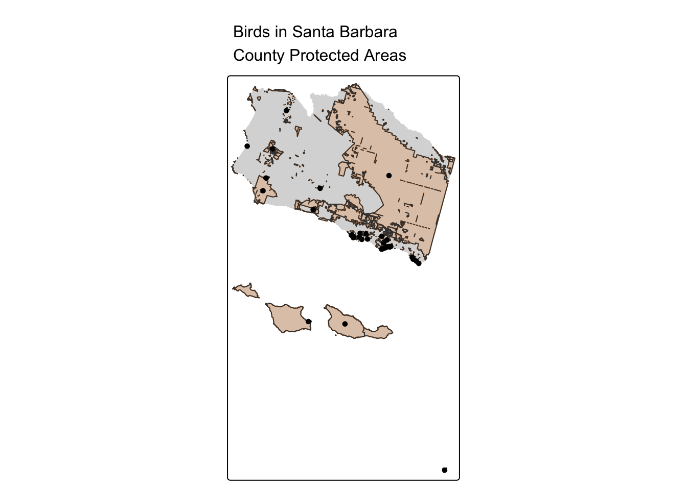
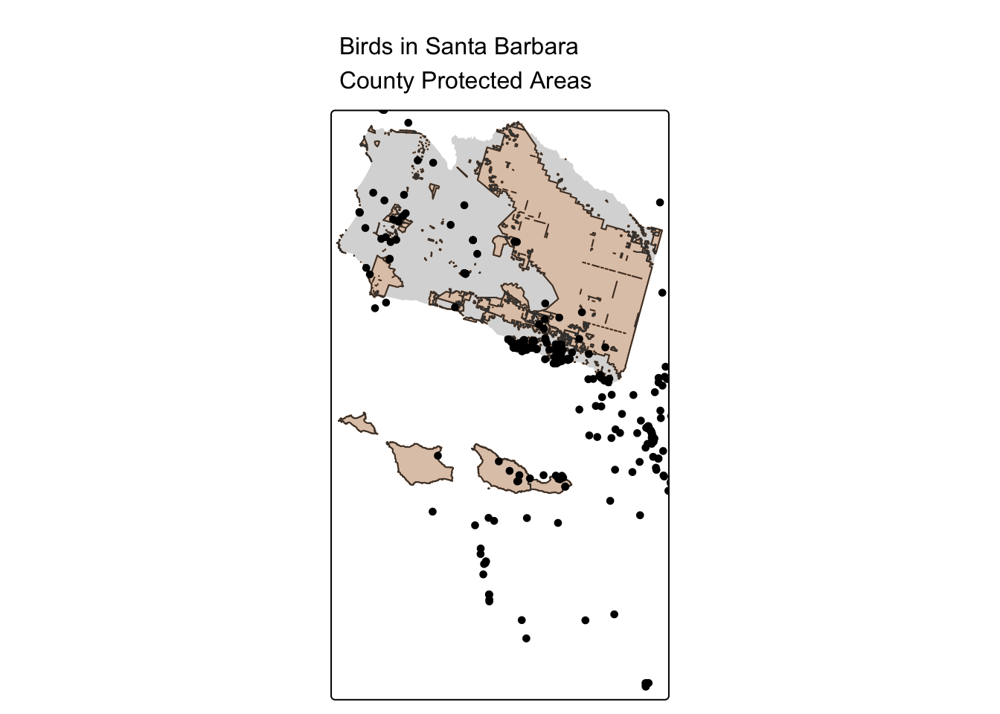

library(here)
library(tidyverse)
library(sf)
library(tmap)Find Bird Observations within Santa Barbara’s PAs
# Read Santa Barbara PA vectors
sb_protected_areas <- read_sf(here::here("data", "cpad_super_units_sb.shp")) %>%
st_transform("ESRI:102009")
# Read Santa Barbara's city boundaries vector
sb_city_boundaries <- read_sf(here::here("data", "sb_city_boundaries_2003.shp")) %>%
st_transform("ESRI:102009")
# Read Santa Barbara's county boundaries vector
sb_county_boundary <- read_sf(here::here("data", "sb_county_boundary_2020.shp")) %>%
st_transform("ESRI:102009")
# Read iNaturalist bird observations from 2020-2024
aves <- read_sf(here::here("data", "aves_observations_2020_2024.shp")) %>%
st_transform("ESRI:102009")Approach with spatial subset:
- Spatially subset the PA geometries to only those with bird observations
aves_PA_subset <- sb_protected_areas[aves, ]
tm_shape(sb_county_boundary) +
tm_fill() +
tm_shape(sb_protected_areas) +
tm_borders(lwd = 1, col = "#fb8500") +
tm_fill(col = "#fb8500", alpha = 0.2) +
tm_shape(aves_PA_subset) +
tm_dots(col = "#023047") +
tm_layout(main.title = "Birds in Santa Barbara\nCounty Protected Areas",
main.title.size = 1)
nrow(aves_PA_subset)[1] 35Approach with a spatial join:
- Append the Protected Area geometries to the bird observation geometries
aves_PA_join <- st_join(aves, sb_protected_areas)
tm_shape(sb_county_boundary) +
tm_fill() +
tm_shape(sb_protected_areas) +
tm_borders(lwd = 1, col = "#fb8500") +
tm_fill(col = "#fb8500", alpha = 0.2) +
tm_shape(aves_PA_join) +
tm_dots(col = "#023047") +
tm_layout(main.title = "Birds in Santa Barbara\nCounty Protected Areas",
main.title.size = 1)
nrow(aves_PA_join)[1] 500And try adding a 5 km buffer around the protected areas:
# Check if units are in meters
st_crs(sb_protected_areas)$units[1] "m"# Create 5000m buffer around PAs
PA_buffer_5km <- st_buffer(sb_protected_areas, dist = 5000)
# Subset the buffered PA geoms to only those with bird observations
aves_buffer_subset <- PA_buffer_5km[aves, ]
tm_shape(sb_county_boundary) +
tm_fill() +
tm_shape(sb_protected_areas) +
tm_borders(lwd = 1, col = "#fb8500") +
tm_fill(col = "#fb8500", alpha = 0.2) +
tm_shape(aves_buffer_subset) +
tm_dots(col = "#023047") +
tm_layout(main.title = "Birds in Santa Barbara\nCounty Protected Areas",
main.title.size = 1)── tmap v3 code detected ───────────────────────────────────────────────────────[v3->v4] `tm_polygons()`: use `fill_alpha` instead of `alpha`.
[v3->v4] `tm_layout()`: use `tm_title()` instead of `tm_layout(main.title = )`nrow(aves_buffer_subset)[1] 327Find PAs within 15 km of Goleta
# Subset SB county to Goleta
goleta <- sb_city_boundaries %>%
dplyr::filter(NAME == "Goleta")
# Create 15km buffer around Goleta
st_crs(goleta)$units[1] "m"goleta_buffer_15km <- st_buffer(goleta, dist = 15000)
# Explore the different outputs with different spatial operations
goleta_PAs_within <- st_within(sb_protected_areas, goleta_buffer_15km)
goleta_PAs_intersect <- st_intersects(sb_protected_areas, goleta_buffer_15km)
goleta_PAs_intersection <- st_intersection(sb_protected_areas, goleta_buffer_15km)
# Check class
class(goleta_PAs_intersect) == class(goleta_PAs_intersection)[1] FALSE FALSE FALSE FALSE# Compute distance-based join
goleta_PAs_join <- st_join(sb_protected_areas, goleta, st_is_within_distance, dist = 15000)
# Print the number of observations included in outputs
nrow(goleta_PAs_intersection)[1] 185nrow(goleta_PAs_join)[1] 369Find Distance between Goleta and Dangermond Preserve
# Subset PA to Dangermond Preserve
dangermond <- sb_protected_areas %>%
dplyr::filter(UNIT_NAME == "Jack and Laura Dangermond Preserve")
# Compute the distance between geometries edges, output as a matrix
danger_dist <- st_distance(goleta, dangermond)
# Calculate the geometric center
dangermond_centroid <- st_centroid(dangermond)
goleta_centroid <- st_centroid(goleta)
danger_dist_centroid <- st_distance(goleta_centroid, dangermond_centroid)
# Check if the distance matrices are equal
danger_dist == danger_dist_centroid [,1]
[1,] FALSE